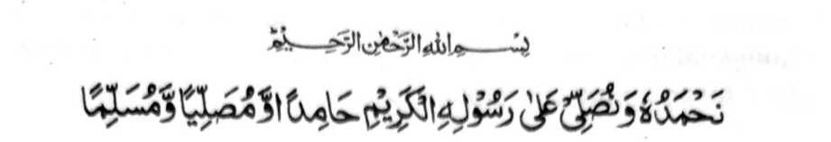
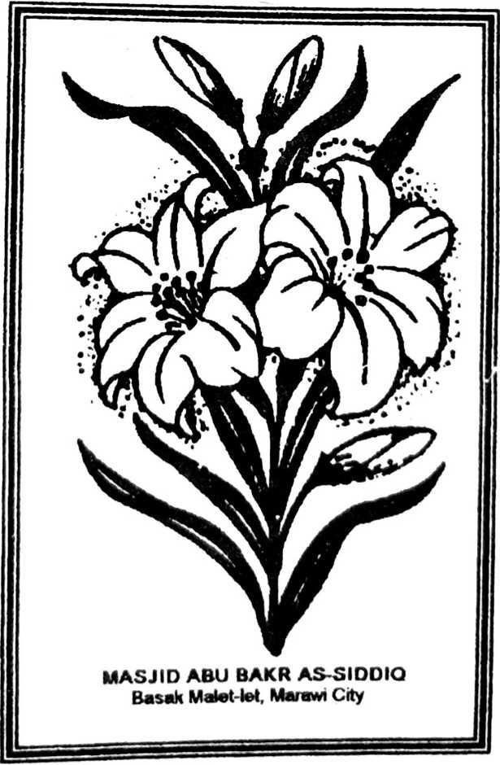

PANAGAYANAN
So langon o podi na rek o Allah (Subhaanaho Wa Ta’ala) go so sanang a maliwanag na mambagi-an o Pinili Iyan a Rasul (Sallallaho ‘Alaihi Wasallam). Si-i sangka-iya a phama-katondog a manga lekatan, na inaloy aken non so saba-ad a manga Hadith a makapantag ko olan-olan a babarakaten a Ramadhan. So Nabi (Sallallaho ‘Alaihi Wasallam) na inipi-is iyan reketano a nggolalan sangka-iya a manga Hadith so kaphorongi tano ko okit a gi-i tano kapaginetao misabap sa kaparoliya tano ko manga kalbihan ago manga barakah sangka-iya a olan-olan. Ogaid na so kadarainon tano, sangka-iya a manga masa imanto, na tanto a miyarinayag ka da tano nggolalanen so manga pando-an niyan ago da tano pamamakinega, taman sa kainotan reketano a katawan niyan so lebi a mala a mapiya a khakowa tano ron.
Aya antap aken sa kiyapanimo-a ko sangka-iya manga Hadith si-i sangka-iya a kitab na oba mabaloy a pangoyat ko manga Imam ko manga Masjid, go so manga Imam ko Sambayang a Taraweeh go so manga ped a mata-o matiya a manga Muslim a aden a babaya iran ko Deen (Agama) ko manga poso iran, sa kabatiya-a iran ago kaosaya iran angka-iya kitab ko manga tao sa Masjid si-i ko paganay a manga gawi-i ko Ramadhan (o di na si-i pen ko da niyan kapakasoled) ka oba kalo-kalo, na misabap ko limo o Allah (Subhaanaho Wa Ta’ala) ago so barakah o manga katharo o Nabi (Sallallaho ‘Alaihi Wasallam), na katago-an tano sa titho a pada-adat ko Ramadhan ago so manga kalbihan niyan. Giya-i phakagawi reketano ko kinggolalanen tano ko manga sogo-an Niyan go ma-awat tano niyan ko manga rarata a galebek.
So Rasulollah (Sallallaho ‘Alaihi Wasallam) na miyatharo iyan: “O si-i reka sabapen o Allah (Subhaanaho Wa Ta’ala) so katoro o sakatao a manosiya, na tomo reka a di so mariga a manga onta [a ibebetad o manga Arab sa mala-i arga a pagigimo].” So Ramadhan, si-i ko pamikiran non o manga Muslim, na tanto a mala a limo a pho-on ko Allah (Subhaanaho Wa Ta’ala). Giyangka-iya a limo na aya bo a kakhatangked iyan sa limo na opama katago-i tano ron sa babaya, ka odi oto manggola-ola na so Ramadhan na sagad-somagad den na da-a miyanggona tano ron. Miya-aloy sa Hadith, “Opama ka so manga ummat aken na katawi ran so kalbihan o Ramadhan, na mandingan-dingan niran a so saragon na langon den Ramadhan.” Giyanan so kipantag angka-iya a olan-olan a kathiger. Si-i ko isa a Hadith na pitharo reketano: “So kaphowasa-i ko Ramadhan ago so telo gawi-i oman saolan na pekhabogao niyan so manga rarata ko poso ago pekhasoti niyan sekaniyan."
So manga Sahabah (Radhiallaho ‘Anhum) na aya ola-ola iran na gi-i siran pen mamowasa apiya sa Jihad go si-i ko tanto a pakadokao ago pakabokel a lalakao, minsan pen ini-idin kiran o Rasulollah (Sallallaho ‘Alaihi Wasallam) sa kaboka iran. Aya kiya-oriyan non na so Rasulollah (Sallallaho ‘Alaihi Wasallam) na inisapar iyan kiran angkanan a kapamowasa [sa Jihad].
Si-i ko isa a Hadith a ped ko “Sahih Muslim” na miyapanothol a so manga Sahabah na domikha siran ko kapezong iran sa Jihad. Tanto a mitataralo so kayao niyan go, sabap ko kamiskin, na di pen pekhakampet so mariga nditaren niran a mirending iran ko karanti o alongan. Si-i sangkoto a masa, na so kadakelan kiran na ba niyan den marerending a palad so kayao o alongan. Kadakelan kiran na gi-i phowasa na tanto a riyarasan o kada-a bager sa di siran phakatindeg sabap ko karanti o alongan na miyanga-oothang siran. So saba-ad ko manga Sahabah na gi-i mamowasa ko tenday o saragon.
Tanto a madakel a manga Hadith a miya-osay ron so manga kalbihan o Ramadhan. Maregen raken o ba ko siran matimo si-i langon, go opama ka iperiray ago osain aken siran si-i phiya-piya, na oba baden ikopay so pembatiya sabap ko karayag o da-a babaya tano [ko Agama] imanto a masa a baden gi-i pagomareg so kada a babaya tano ron melagid so ‘Ilmo rekaniyan o di na so kinggolalanen non.
Giyoto-i sabap a aya bo a inaloy aken si-i na dowa-polo ago isa a manga Hadith sangka-iya a kitab go miyabagi aken siran pen sa telo a manga pinto, siran so.
a. Pinto a Isa, makapantag ko Manga Kalbihan o Ramadhan (10 a Hadith).
b. Pinto a Dowa, makapantag ko ‘Laylatul Qadr’ (7 a Hadith).
c. Pinto a Telo, makapantag ko Itikaaf (3 a Hadith)
Si-i sa kaposan, na si-i ko okit a kathamata sangka-iya a kitab, na inomanan aken sa satiman a marawa a Hadith. Tarima-an o Allah (Subhaanaho Wa Ta’ala) angka-iya a galebek sabap ko Limo Iyan ago so Baraka o pekhababaya-an Niyan a ‘Rasul’ a so Muhammad (Sallallaho ‘Alaihi Wasallam), go began ako niyan ago so langowan a Muslim sa bager a kapaka-paroli ami si-i sa gona. “Aameen”.
MUHAMMAD ZAKARIYYAH KANDHALAWI
